Lab 6：FPGA 原型验证
开始之前
- 主题：把 Lab 3 的 SoC 部署到 FPGA 上，通过 JTAG + OpenOCD + GDB 调试运行
- 前置：Lab 3——你自己的 SoC（含脉动阵列 NPU）在 ModelSim 中三个测试全部 PASS
- 板卡：EGo1（Xilinx Artix-7
xc7a35tcsg324-1）+ USB-JTAG 下载器 - 课时：2 次实验课
- 完成标准：本实验不需要提交任何材料，也不设验收。目标是把"综合 → 实现 → 烧写 → 上板调试"的完整流程走一遍
关于工具版本与截图
- 助教实验基于 Vivado 2023.1。版本不同，界面和菜单位置会略有差异，差异部分请自行解决
- 讲义中的截图仅作示例，其中的工程目录、模块名可能过期， 具体填写的内容以讲义正文和表格为准
管脚与接线仅供参考
本讲义给出的管脚分配和接线表来自 EGo1 用户手册，请自行对照 EGo1 用户手册 核对。
1. 实验目标
前面的实验里，SoC 只存在于仿真器中。本实验把它变成真正的硬件：
- 在 Vivado 中为 Lab 3 的 SoC 加一层 FPGA 顶层（时钟、复位），综合、布局布线、生成比特流
- 把比特流烧到 EGo1 上，让 CPU 真的跑起 Lab 3 的测试程序
- 通过 JTAG 下载器 + OpenOCD + GDB 连上这颗 CPU：停下它、看寄存器、读写内存， 直接在板子上访问你写的 NPU
完成后你将熟悉 FPGA 原型验证的完整流程，以及 RISC-V CPU 的标准调试方式。
2. 准备
2.1 工具
| 工具 | 用途 | 说明 |
|---|---|---|
| Vivado（建议 2023.1） | 综合、实现、烧写 | 安装时至少勾选 Artix-7 器件支持 |
| ModelSim | 仿真（可选） | 同 Lab 2 §2 |
| WSL（Ubuntu） | 运行 OpenOCD 和 GDB | 本讲义只介绍 WSL 的做法 |
| usbipd-win（4.0.0 及以上） | 把 USB 下载器映射进 WSL | 见 §9.3 |
| EGo1 开发板 + USB-JTAG 下载器 + 杜邦线 | 硬件 | 实验课发放 |
关于 Windows PowerShell
OpenOCD 和 GDB 也可以直接在 Windows 下运行，但驱动安装、配置文件和连接方式都略有差异， 需自行处理。建议使用 WSL。
2.2 从 Lab 3 出发
本实验没有新的实验包，直接在你自己完成的 Lab 3 目录上继续：
SoC_cv32e40p/ 你的 Lab 3 目录
├── cpu_cv32e40p/
├── simple_npu/rtl/ 你的脉动阵列核 + MMIO 壳
├── soc/
│ ├── rtl/ 你改好的 SoC 顶层（NPU 已挂上）
│ └── sim/tb/ my_soc_tb.sv、lab3_test*.hex ...
└── fpga/ <- 本实验新建，放 FPGA 顶层和约束
开始之前确认两件事：
- Lab 3 的
lab3_test1/2/3.hex在 ModelSim 中全部 PASS。仿真都不过的设计，上板一定不会对 - 整个目录放在纯英文、无空格的路径下（例如
D:\Projects\lab6\SoC_cv32e40p）。 Vivado 和 ModelSim 对中文路径的支持都不好
2.3 把程序镜像的路径改成绝对路径
主存初始内容由 soc/rtl/mem/my_mainmem.sv 的 INIT_FILE 指定，Lab 3 里写的是相对路径：
ModelSim 在 SoC_cv32e40p/ 下运行，相对路径没问题。但 Vivado 工程综合时的工作目录在
<工程>/<工程名>.runs/synth_1/ 下，按相对路径找不到这个文件。
请把它改成你机器上的绝对路径，路径分隔符用正斜杠 /：
这一步不改，上板后什么都不会发生
找不到 hex 文件时，Vivado 不会报错，只在综合日志里留一条
CRITICAL WARNING: [Synth 8-4445] could not open $readmem data file ...，
然后把主存当成全 0 继续综合。比特流照样能生成、能烧写，但 CPU 跳进主存后执行的全是 0，
程序根本不会运行。§7.4 会教你怎么确认它读到了。
改完之后回 ModelSim 再跑一次 test1，确认仍然 PASS（绝对路径对 ModelSim 同样有效）。
3. 整体结构
EGo1 开发板
┌──────────────────────────────────────────────────────────────┐
│ │
│ P17 ──100 MHz──> ┌────────────┐ │
│ │ clk_wiz_0 │──50 MHz──┐ │
│ │ (MMCM) │──locked──┤ │
│ └────────────┘ ▼ │
│ P15 ──复位按键──────────────────> 复位同步（等 locked） │
│ │ │
│ ┌───────────────────────┴───────────┐ │
│ │ fpga_top │ │
│ │ ┌─────────────────────────────┐ │ │
│ │ │ my_soc_top（你的 Lab 3） │ │ │
│ │ │ CPU + xbar + 主存 + NPU │ │ │
│ │ │ + Debug Module (JTAG) │ │ │
│ │ └──────────────┬──────────────┘ │ │
│ └──────────────────┼────────────────┘ │
│ │ tck/tms/tdi/tdo │
│ J5 扩展口 ◄─────────────────────────┘ │
└──────┬───────────────────────────────────────────────────────┘
│ 杜邦线
┌──────┴──────┐ USB ┌──────────────────────────────────────┐
│ USB-JTAG │◄────────►│ 电脑：WSL 中的 OpenOCD ◄──► GDB │
│ 下载器 │ └──────────────────────────────────────┘
└─────────────┘
和仿真相比，多了三样东西：
- 时钟：板载晶振是 100 MHz，而本 SoC 在 Artix-7 上大约只能跑到 55 MHz 左右（§7.4）， 所以用 Vivado 的 Clocking Wizard 生成 50 MHz 给 SoC 用
- 复位：要等时钟稳定（
locked = 1）之后才释放复位，否则 CPU 可能在时钟还在抖的时候就开始跑 - 调试通路：仿真时 testbench 直接看主存里的 magic 值判断 PASS； 上板后只能通过 Lab 2 里"本实验不涉及"的那个 Debug Module，经 JTAG 从外面看 CPU 内部
4. 创建 Vivado 工程
4.1 新建工程
打开 Vivado，Create Project → 选择 RTL Project → Next。
工程目录建议放在 SoC_cv32e40p/ 之外的英文路径下（例如 D:\Projects\lab6\vivado\），
避免 Vivado 生成的大量文件和源码混在一起。
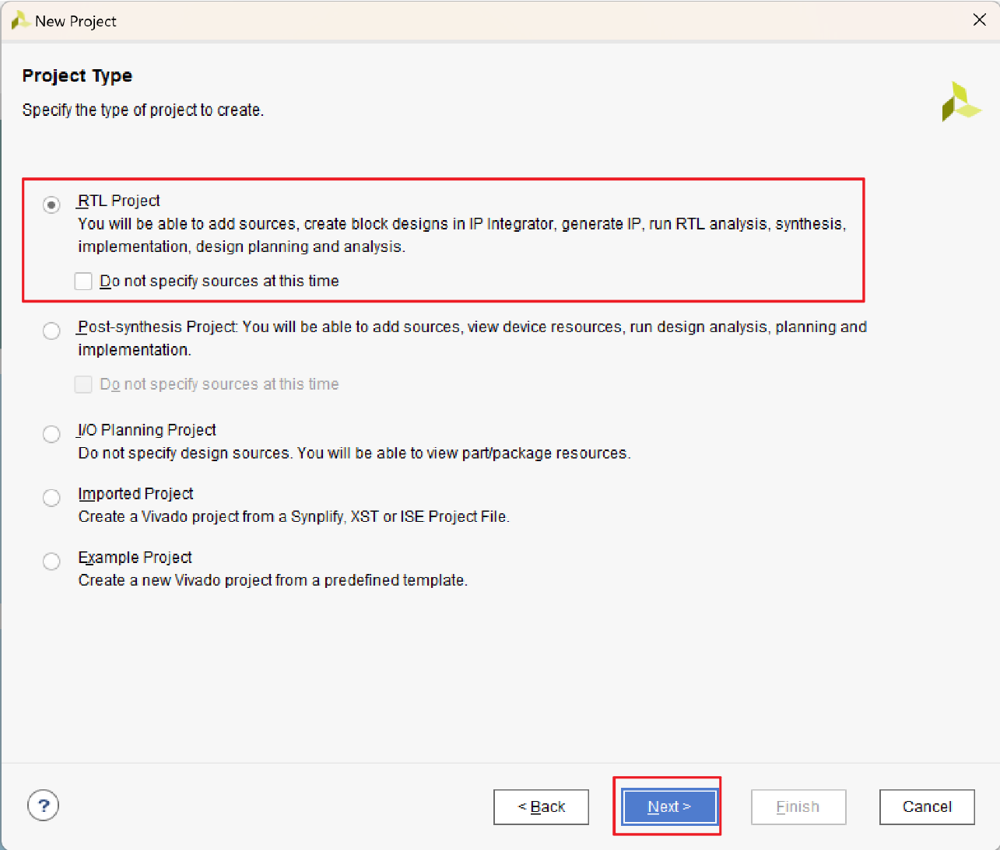
4.2 添加设计源
在 Add Sources 页面点 Add Directories，加入下面三个目录。
勾选 Scan and add RTL include files into project 和 Add sources from subdirectories，
不要勾选 Copy sources into project（否则改源码时要改两份）。
| 目录 | 内容 |
|---|---|
SoC_cv32e40p/cpu_cv32e40p |
CV32E40P CPU（包括 include/ 里的包） |
SoC_cv32e40p/soc/rtl |
AXI、debug、存储、SoC 顶层 |
SoC_cv32e40p/simple_npu/rtl |
你的 NPU |
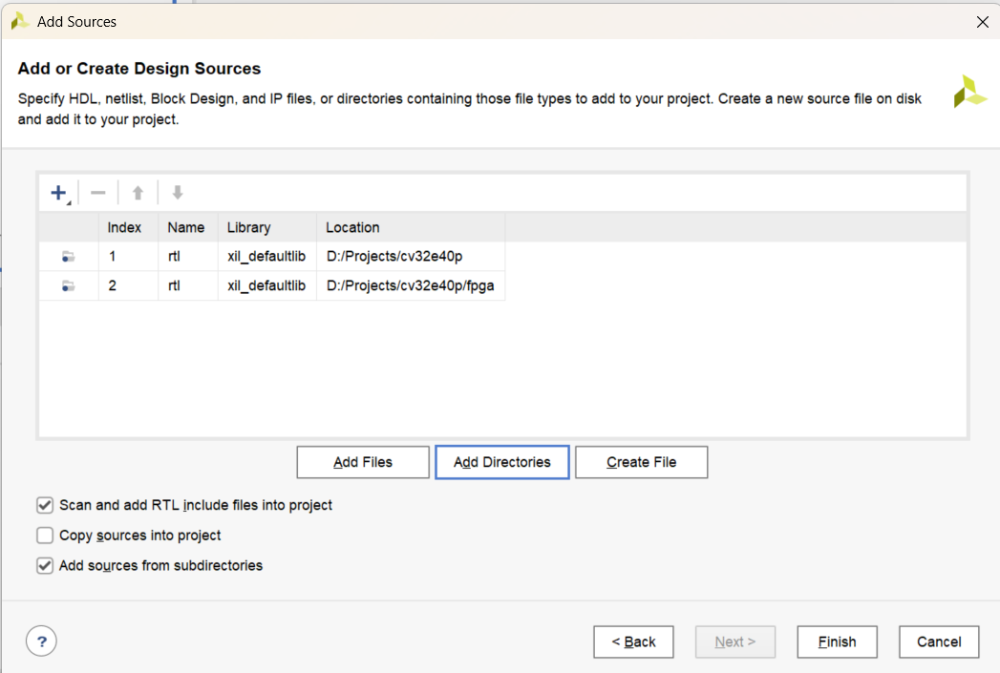
关于 cpu_cv32e40p/vendor/
Lab 2 里说过 vendor/（浮点单元等）不需要编译。整个目录加进来也没关系：
Vivado 会从顶层往下找真正被例化的模块，没用到的文件不会进入综合。
仿真源（只在做 §6 仿真时需要）：在同一个向导里切到 Add or Create Simulation Sources，
加入 soc/sim/tb/my_soc_tb.sv。勾选 Include all design sources for simulation。
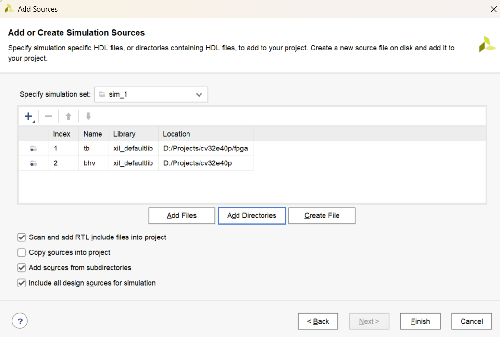
4.3 先不加约束，选择器件
Add Constraints 这一页先跳过，直接 Next。器件选择 xc7a35tcsg324-1（EGo1 上的 FPGA）。
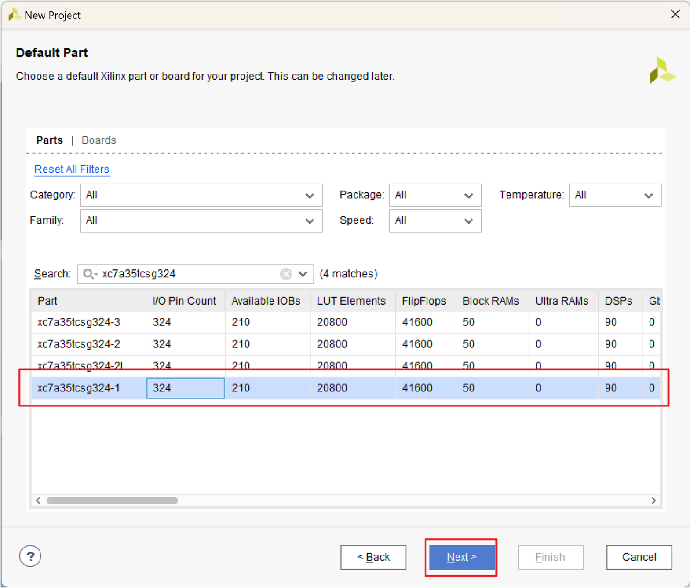
4.4 头文件路径
AXI 相关的文件里有 `include "axi/typedef.svh"，需要告诉 Vivado 去哪里找头文件。
Settings → General → Verilog options → Verilog Include Files Search Paths，加入：
如果第 4.2 步勾选了 Scan and add RTL include files，Vivado 一般已经能找到，但显式加上更稳妥。
5. FPGA 顶层
5.1 生成 Clocking Wizard
PROJECT MANAGER → IP Catalog，搜索 clocking，双击 Clocking Wizard。只需要改下面几项，
其余保持默认：
| 位置 | 设置 |
|---|---|
| Component Name | clk_wiz_0（默认值，和下面的代码对应） |
| Clocking Options → Input Clock Information | Primary 输入频率 100 MHz |
| Output Clocks → clk_out1 | Requested 50 MHz |
| Output Clocks → 底部 Enable Optional Inputs / Outputs | 取消 reset，保留 locked |
点 OK → Generate。生成后它就是一个可以直接例化的模块 clk_wiz_0，
端口为 clk_in1、clk_out1、locked。
为什么不用计数器二分频
用一个触发器翻转也能得到 50 MHz，但那样产生的时钟走的是普通布线，延迟和抖动都不可控。 Clocking Wizard 用的是 FPGA 内部专门的时钟管理单元（MMCM），输出直接上全局时钟网络， Vivado 也能自动推导出它的时序约束（§7.2）。
5.2 fpga_top.sv
在 SoC_cv32e40p/ 下新建 fpga/fpga_top.sv，内容如下，然后把它加入工程
（Add Sources → Add or create design sources → Add Files）：
`timescale 1ns/1ps
// Lab 6 · FPGA 顶层
// 板载 100 MHz 时钟 --Clocking Wizard--> 50 MHz 系统时钟
// 时钟稳定（locked）之后才释放复位：异步置位、同步释放
module fpga_top (
input logic fpga_clk_i, // 板载 100 MHz 时钟
input logic rst_ni, // 复位按键，低有效
input logic tck_i, // JTAG
input logic tms_i,
input logic td_i,
output logic td_o
// TODO：在这里加上你的 LED 输出端口
);
// ---------------- 时钟：100 MHz -> 50 MHz ----------------
logic clk_sys; // 50 MHz，给整个 SoC 用
logic clk_locked; // 1 = 时钟已稳定
clk_wiz_0 u_clk_wiz (
.clk_in1 (fpga_clk_i),
.clk_out1 (clk_sys),
.locked (clk_locked)
);
// ---------------- 复位：等时钟稳定后再释放 ----------------
// 按下复位键或时钟还没稳定，都立刻复位
wire async_rst_n = rst_ni & clk_locked;
// 两级寄存器：复位来时立刻生效，撤销时跟着 clk_sys 打两拍再放开
logic [1:0] rst_sync_q;
always_ff @(posedge clk_sys or negedge async_rst_n) begin
if (!async_rst_n) rst_sync_q <= 2'b00;
else rst_sync_q <= {rst_sync_q[0], 1'b1};
end
logic rst_sys_n;
assign rst_sys_n = rst_sync_q[1];
// ---------------- 你在 Lab 3 完成的 SoC ----------------
my_soc_top u_soc (
.clk_i (clk_sys),
.rst_ni (rst_sys_n),
.tck_i (tck_i),
.tms_i (tms_i),
.td_i (td_i),
.td_o (td_o)
);
// TODO：在这里加上 LED 指示逻辑
endmodule
然后把它设为综合顶层：Settings → General → Top module name 填 fpga_top
（或者在 Sources 窗口里右键 fpga_top → Set as Top）。
为什么要「同步释放」
复位信号撤销的那一刻如果正好落在时钟沿附近，不同的触发器可能一个看到复位、一个没看到，
整个系统从一个不一致的状态开始运行。两级寄存器让复位的"撤销"对齐到 clk_sys 的时钟沿上，
这是 FPGA 和芯片设计里的标准做法。
5.3 加几个 LED 指示上板状态
上板之后看不到波形，最直接的判断手段就是 LED。建议你在 fpga_top 里自己加上几个，
这对后面排查问题非常有帮助（下面只给思路，代码自己写）：
| LED | 含义 | 实现思路 |
|---|---|---|
| locked 灯 | Clocking Wizard 是否锁定 | 直接 assign 成 clk_locked。不亮说明时钟没起来，后面全都不用看 |
| 心跳灯 | 系统时钟和复位是否正常 | 在 clk_sys 下用计数器分频到 1 Hz 左右翻转。用 rst_sys_n 复位，按住复位键时应停止闪烁 |
| tck 灯 | JTAG 时钟是否进来了 | 在 tck_i 下计数，计到一定值就翻转。OpenOCD 连接时会有一阵 tck，灯应该会变化 |
LED 的管脚见 §7.1。EGo1 的 LED 是高电平点亮。
6. 在 Vivado 中调用 ModelSim 仿真
可选
如果你已经在 Lab 3 完成仿真，本节为可选部分；如果没有，那么本节必做。
这里仿真的仍然是 Lab 3 的 my_soc_tb（SoC 本身），只是换成从 Vivado 里启动 ModelSim。
Vivado 自带的仿真器 XSIM 跑这个 SoC 非常慢，所以改用 ModelSim。
6.1 编译仿真库
ModelSim 要仿真 Vivado 的 IP，需要先把 Vivado 的仿真库编译成 ModelSim 能用的格式。
Tools → Compile Simulation Libraries：
| 选项 | 设置 |
|---|---|
| Simulator | ModelSim Simulator |
| Family | Artix-7（只编译这一个系列，否则所有系列都编会非常慢） |
| Compiled library location | 建议在 ModelSim 的安装目录下新建一个文件夹，例如 D:/modeltech64_2019.2/vivado_artix7_lib |
| Simulator executable path | ModelSim 的 win64 目录，例如 D:/modeltech64_2019.2/win64 |
点 Compile，大约需要 20 分钟，期间可以先往下做 §7。
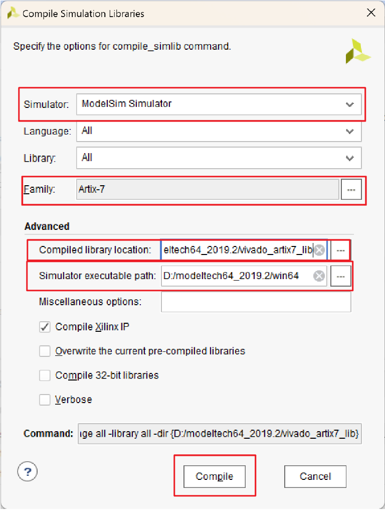
6.2 仿真设置
Settings → Simulation：
| 选项 | 设置 |
|---|---|
| Target simulator | ModelSim Simulator |
| Simulation top module name | my_soc_tb（Lab 3 的 testbench） |
| Compiled library location | §6.1 里填的那个文件夹 |
Simulation 页签 → modelsim.simulate.log_all_signals |
勾上。这样仿真时会记录所有信号的波形，跑完再加信号也有数据（同 Lab 2 §5.2 的 log -r /*） |
Simulation 页签 → modelsim.simulate.vsim.more_options |
-suppress 12110 -novopt（同 Lab 2 §5.4） |
Compilation 页签 |
和 §4.4 一样，也要加上头文件路径 soc/rtl/include |
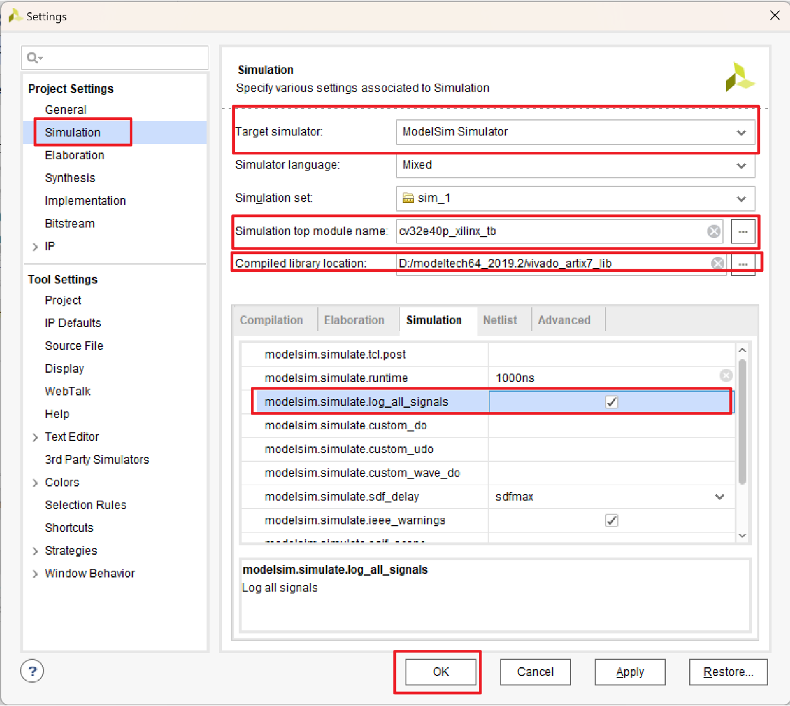
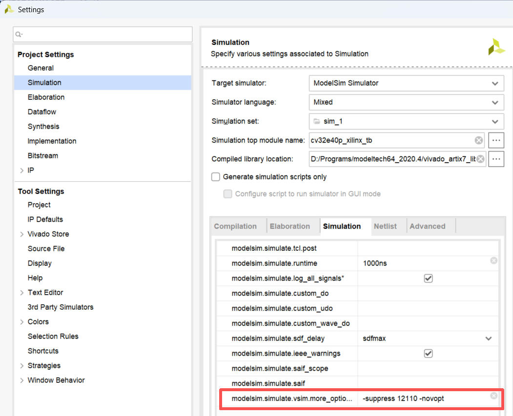
6.3 运行
SIMULATION → Run Simulation → Run Behavioral Simulation，Vivado 会自动拉起 ModelSim。
在 ModelSim 的 Transcript 里 run -all，应当看到和 Lab 3 一样的 PASS。
7. 约束、综合、实现、生成比特流
7.1 管脚约束
RTL ANALYSIS → Open Elaborated Design，打开后菜单 Window → I/O Ports。
左侧列出了 fpga_top 的所有端口，在 Package Pin 一栏填管脚，I/O Std 一栏全部选 LVCMOS33
（EGo1 上这些 IO 都是 3.3 V 供电）。
以下管脚为参考，请自行核对 EGo1 用户手册
| 端口 | 管脚 | 板上位置 | 手册章节 |
|---|---|---|---|
fpga_clk_i |
P17 | 板载 100 MHz 时钟 | 3 系统时钟 |
rst_ni |
P15 | RST 按键（S6） | 5.1 按键 |
tck_i |
E15 | J5 扩展口 17 脚 | 14 通用扩展 I/O |
td_i |
E16 | J5 扩展口 18 脚 | 14 通用扩展 I/O |
td_o |
D15 | J5 扩展口 19 脚 | 14 通用扩展 I/O |
tms_i |
C15 | J5 扩展口 20 脚 | 14 通用扩展 I/O |
| LED（自选，§5.3） | 例如 K3、M1、K1 | 板上 LED | 5.3 LED 灯 |
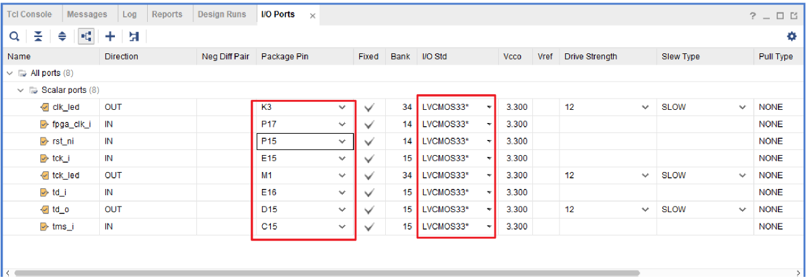
填完后 Ctrl+S，Vivado 会提示把约束保存成一个新的 .xdc 文件，起个名字（例如 fpga_top.xdc）即可。
复位按键的电平
rst_ni 是低有效。有时候工程直接把 P15（专用 RST 按键）当作低有效复位使用。
但手册只写了五个通用按键"默认为低电平，按下时输出高电平"，没有写 RST 按键的电平。如果烧写后心跳灯不闪、按住复位键反而开始闪，
说明电平是反的，在 fpga_top 里把 rst_ni 取反后再用。这一点请上板时自己确认。
7.2 时序约束
管脚约束保存后，先 Run Synthesis 一次（约 5 分钟），然后
SYNTHESIS → Open Synthesized Design → Constraints Wizard。
Primary Clocks：Vivado 会识别出两个从管脚输入的时钟，填上频率：
| 时钟 | 频率 | 说明 |
|---|---|---|
fpga_clk_i |
100 MHz | 板载时钟 |
tck_i |
1 MHz 即可 | JTAG 时钟，由下载器给出，不需要高频 |
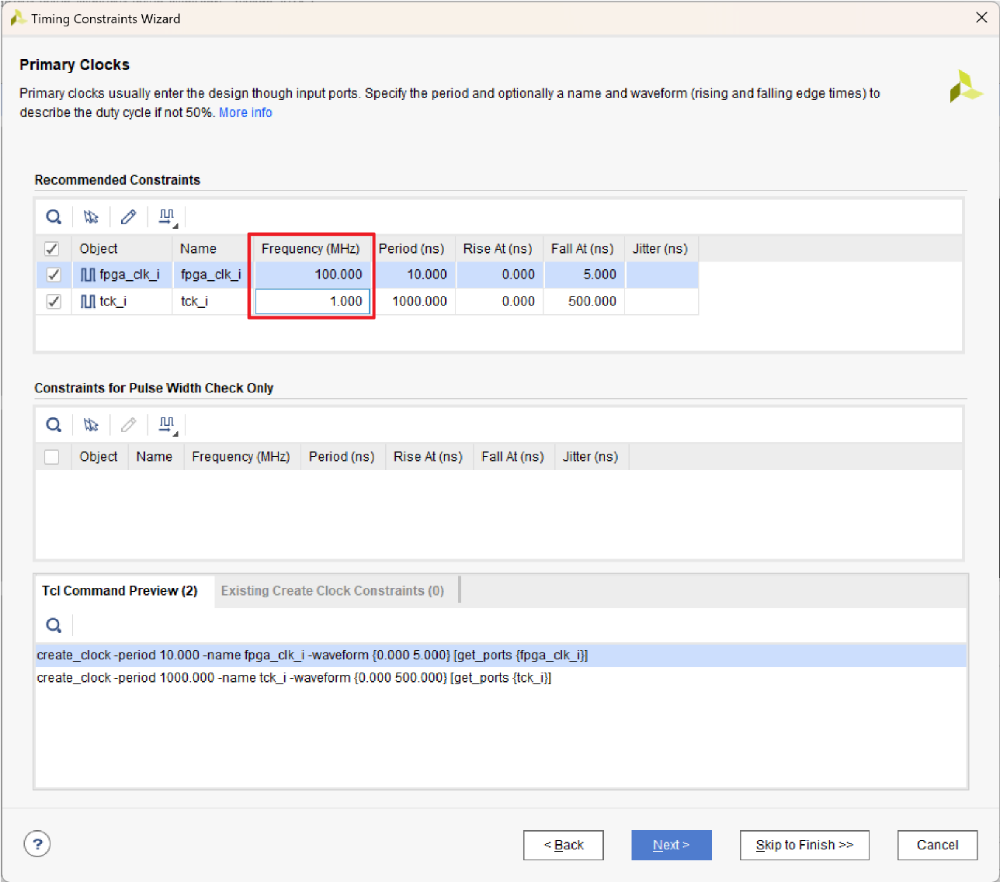
Generated Clocks：用了 Clocking Wizard 之后，50 MHz 时钟由 Vivado 根据 IP 自动推导， 这一页不需要填（如果项目使用计数器二分频，那么才需要在这里指定 Divide by 2）。
Asynchronous Clock Groups：tck_i 和 50 MHz 系统时钟互不相关，跨越两者的信号已经在
Debug Module 里用专门的跨时钟域电路处理过（soc/rtl/debug/dmi_cdc.sv）。
在这一页把它们设为异步，Vivado 就不会再按同步时钟去检查它们之间的路径。
点 Finish，约束会写进你的 .xdc。最终 .xdc 里的时序部分大致是这样：
create_clock -period 10.000 -name fpga_clk_i -waveform {0.000 5.000} [get_ports fpga_clk_i]
create_clock -period 1000.000 -name tck_i -waveform {0.000 500.000} [get_ports tck_i]
set_clock_groups -asynchronous -group [get_clocks tck_i] -group [get_clocks -include_generated_clocks fpga_clk_i]
不想点向导，也可以直接写
上面三行直接粘贴进 .xdc 效果一样。最后一行如果漏了，综合后的 methodology 报告会多出
TIMING-6 / TIMING-7 两条 Critical Warning（时钟之间没有公共源却被一起检查）和一串
Large hold violation 警告。
7.3 综合、实现、生成比特流
依次点：
Run Synthesis（加完时序约束后再综合一次）- 综合完成对话框里选
Run Implementation - 实现完成对话框里选
Generate Bitstream
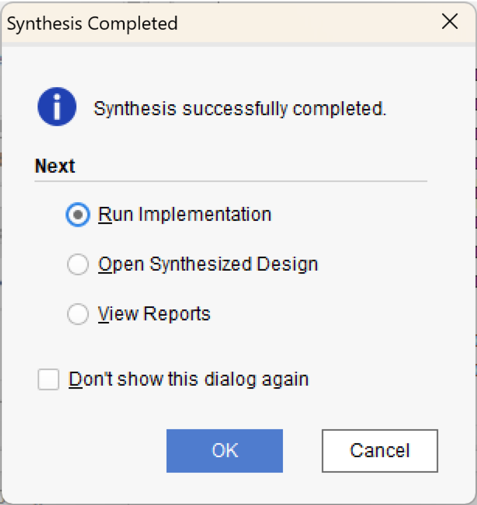
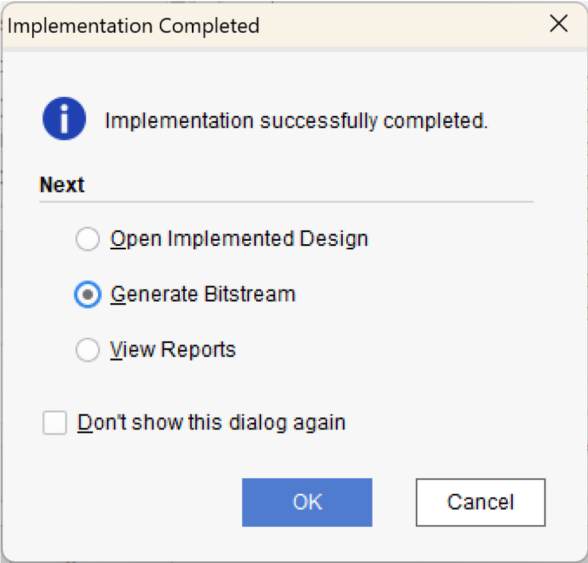
整个流程大约 10~15 分钟（视电脑性能而定）。
7.4 看报告：确认这块比特流"真的对"
生成比特流不代表设计是对的。在烧写之前，检查下面三项：
(1) 程序有没有装进主存：打开综合日志（Reports → Synthesis → Vivado Synthesis Report，
或 <工程>.runs/synth_1/runme.log），搜索 readmem：
| 看到 | 说明 |
|---|---|
INFO: [Synth 8-3876] $readmem data file '...lab3_test1.hex' is read successfully |
正确 |
CRITICAL WARNING: [Synth 8-4445] could not open $readmem data file ... |
没读到，主存是空的，回 §2.3 |
(2) 主存是不是变成了 BRAM：Report Utilization，看 Memory 一节的 Block RAM Tile。
Lab 3 的主存是 2048 × 32 bit = 8 KB，应当用掉 2 个 RAMB36。
关于 BRAM
sram_ff.sv 是按"同步读、字节使能写、单端口"的标准写法写的（Lab 2 Task 4），
这种写法 Vivado 能自动识别并综合成 BRAM，同时把 $readmemh 读到的内容作为 BRAM 的初始值
写进比特流，所以不需要手动生成 Block Memory Generator IP。
如果你看到的不是 BRAM，而是用掉了大量 LUT 或者寄存器，说明你的 sram_ff 写法不规范
（例如写成了组合读、或者读写分在了两个 always 块里），回去对照 Lab 2 §4.4 的三条契约。
(3) 时序是否满足：Report Timing Summary，看 WNS（Worst Negative Slack）。
WNS ≥ 0 才表示所有路径都能在 50 MHz 下按时完成。
下面是一组参考数据（Lab 3 脉动阵列 SoC + 本讲义的 fpga_top，Vivado 2023.1）：
| 项目 | 结果 |
|---|---|
| LUT | 约 8.7 k / 20.8 k（42%） |
| 寄存器 | 约 6.0 k / 41.6 k（14%） |
| Block RAM Tile | 2 / 50 |
| DSP | 5 / 90 |
| MMCM | 1 / 5（Clocking Wizard） |
| WNS @ 50 MHz | 约 +1.4 ~ +2.1 ns（每次运行略有不同） |
你的数字和这里有出入是正常的（NPU 实现不同），只要 WNS ≥ 0 就可以继续。 如果 WNS 是负的，先确认 Clocking Wizard 输出的确实是 50 MHz，而不是 100 MHz。
8. 烧写与接线
8.1 烧写比特流
用 Type-C 线把 EGo1 接到电脑（这根线同时负责供电和烧写），打开电源开关。
PROGRAM AND DEBUG → Open Hardware Manager → Open Target → Auto Connect，
识别到 xc7a35t 后右键 → Program Device，选择 <工程>.runs/impl_1/fpga_top.bit。
烧写成功后先看 LED（§5.3）：
| 现象 | 说明 |
|---|---|
| locked 灯亮、心跳灯闪烁 | 时钟和复位都正常，CPU 已经开始运行 |
| locked 灯不亮 | Clocking Wizard 没锁定，检查 fpga_clk_i 的管脚 |
| locked 灯亮、心跳灯不闪 | 一直处于复位状态，检查复位按键的管脚和电平（§7.1） |
Type-C 线和 JTAG 下载器是两回事
EGo1 板载的 Type-C 口内部也是一个 JTAG，接的是 FPGA 本身，Vivado 用它来烧写比特流。 下一步要接的 USB-JTAG 下载器连的是你的 SoC 里的 Debug Module，用来调试 CPU。 两条 JTAG 链互不相干，两根线要同时插着。
8.2 JTAG 接线
我们用的 USB-JTAG 下载器（核心芯片是 FTDI FT232H）：
下载器一端的 2×5 插座定义如下：
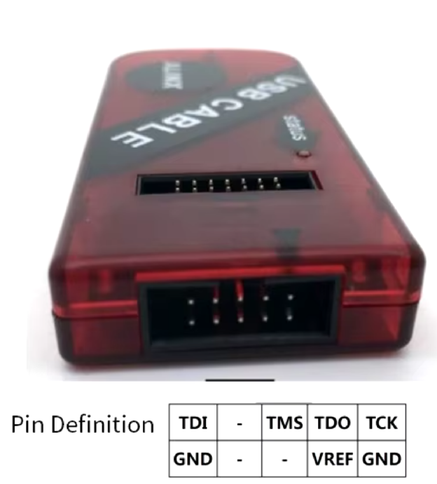
EGo1 的 J5 扩展口（2×18 针）原理图：
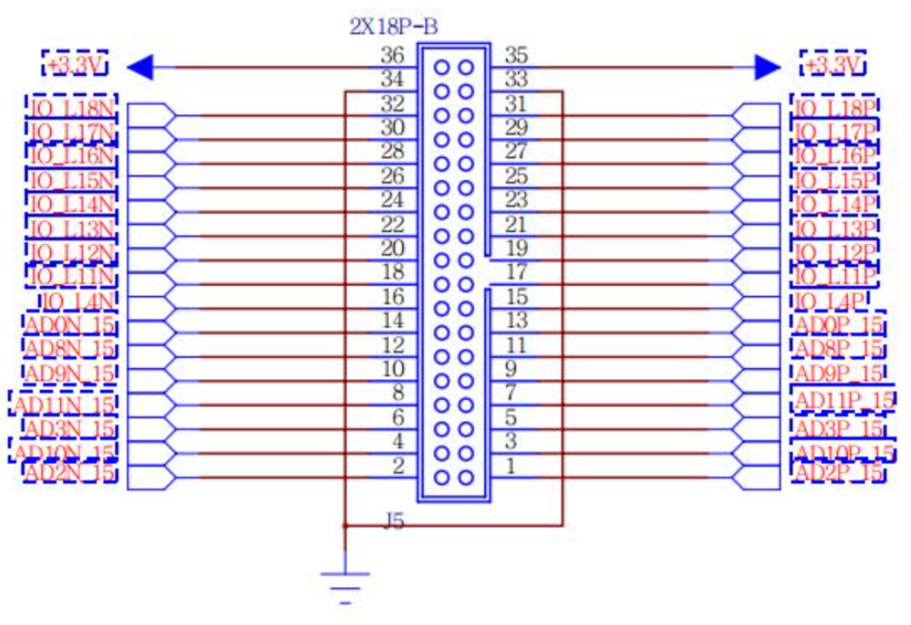
用杜邦线按下表把 6 根线全部接上：
以下接线为参考，请自行核对 EGo1 用户手册 第 14 节和 §7.1 的管脚约束
| 下载器引脚 | 接到 J5 的脚号 | FPGA 管脚 | SoC 端口 |
|---|---|---|---|
| TCK | 17 | E15 | tck_i |
| TDI | 18 | E16 | td_i |
| TDO | 19 | D15 | td_o |
| TMS | 20 | C15 | tms_i |
| VREF | 35 或 36（+3.3V） | — | — |
| GND | 33 或 34（GND） | — | — |
VREF 和 GND 为什么也要接
- GND：两块板子的"0 电平"必须是同一个参考，否则信号电平没有意义。必须接
- VREF：下载器用它来判断目标板的 IO 电压，并据此决定输出信号的电平。 我们的 JTAG 管脚都约束成了 LVCMOS33，所以 VREF 接 J5 上的 3.3V。 VREF 只是一个参考输入，不会给板子供电
- 下载器上有两个 GND 脚，接一个就够，两个都接更稳
注意 TDI / TDO 的方向：下载器的 TDI 是它发出的数据，接到 SoC 的输入 td_i；
SoC 的输出 td_o 接回下载器的 TDO。
接好后，所有硬件连接就完成了。
9. 用 OpenOCD + GDB 调试 CPU
9.1 RISC-V 调试体系
为了便于调试，RISC-V 规定了 Debug Module 的设计规范，以便调试器与 CPU 之间通信， 详见 RISC-V Debug Specification。
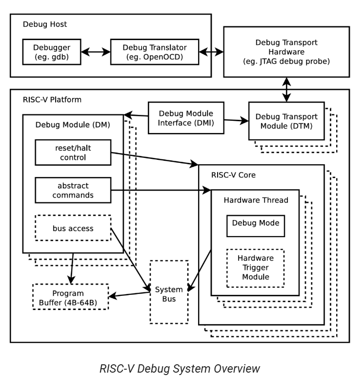
从上往下：
- 与我们直接交互的软件是调试器（Debugger），本实验用 RISC-V GDB，运行在电脑上
- 调试器与调试转换器（Debug Translator）通信，本实验用 OpenOCD
- 调试转换器驱动调试传输硬件（Debug Transport Hardware），也就是 USB-JTAG 下载器
- 下载器通过 JTAG 信号连到 SoC 里的调试传输模块（DTM），对应 Lab 3 SoC 里的
dmi_jtag - DTM 通过 DMI 访问调试模块（DM），对应
dm_top。DM 能让 CPU 停下（halt）、 读写寄存器，还能作为一个 AXI master 直接读写总线上的任何地址—— 这正是 Lab 2 图里 debug module 既是 master 又是 slave 的原因
9.2 在 WSL 中安装 OpenOCD
WSL 可能自带一个 OpenOCD，版本太旧不支持 RISC-V，先卸载：
下载 RISC-V 版 OpenOCD 源码并编译安装：
git clone https://github.com/riscv/riscv-openocd
cd riscv-openocd
sudo apt-get install libftdi-dev libusb-1.0-0 libusb-1.0-0-dev autoconf automake texinfo pkg-config libjim-dev
./bootstrap
./configure --enable-ftdi
make -j$(nproc)
sudo make install
验证：
应当输出 /usr/local/bin/openocd 和类似 Open On-Chip Debugger 0.12.0+dev-... 的版本信息。
9.3 把 USB 下载器映射进 WSL
WSL 自带 FTDI 驱动，不需要额外安装。但 WSL 默认看不到 Windows 上的 USB 设备， 需要用 usbipd-win 把它"借"给 WSL。 请安装 4.0.0 及以上版本。
在管理员权限的 PowerShell 中，先找到下载器：
Connected:
BUSID VID:PID DEVICE STATE
1-4 048d:c101 USB 输入设备 Not shared
2-4 0bda:4852 Realtek Bluetooth Adapter Not shared
4-3 0403:6014 USB Serial Converter Not shared
找到 VID:PID 为 0403:6014 的那一行，记下它的 BUSID（上例是 4-3，你的可能不同），然后：
bind 只需要做一次；attach 在每次重新插拔下载器、或重启电脑后都要再做一次。
回到 WSL 中确认：
能看到 ID 0403:6014 Future Technology Devices International, Ltd FT232H ... 即映射成功。
9.4 配置文件与启动 OpenOCD
OpenOCD 通过配置文件（.cfg）知道"用的是什么下载器、目标是什么 CPU"。
在 WSL 中新建 cv32e40p.cfg：
adapter speed 10
adapter driver ftdi
transport select jtag
ftdi vid_pid 0x0403 0x6014
# Channel 1 is taken by Xilinx JTAG
ftdi channel 0
ftdi layout_init 0x0018 0x001b
ftdi layout_signal nTRST -ndata 0x0010
set _CHIPNAME riscv
jtag newtap $_CHIPNAME cpu -irlen 5
set _TARGETNAME $_CHIPNAME.cpu
target create $_TARGETNAME riscv -chain-position $_TARGETNAME -coreid 0
gdb report_data_abort enable
gdb report_register_access_error enable
riscv set_command_timeout_sec 120
riscv set_mem_access progbuf sysbus abstract
init
halt
echo "Ready for Remote Connections"
几个关键行：
| 配置 | 含义 |
|---|---|
adapter speed 10 |
JTAG 时钟 10 kHz。杜邦线连接质量一般，速度低一点更稳 |
ftdi vid_pid 0x0403 0x6014 |
下载器的 VID:PID，和 §9.3 里看到的一致 |
jtag newtap ... -irlen 5 |
SoC 里 dmi_jtag_tap 的指令寄存器长度是 5 位 |
riscv set_mem_access progbuf sysbus abstract |
访问内存的方式优先级：先让 CPU 执行指令去读写，不行再让 DM 直接走总线 |
init / halt |
连上之后立刻让 CPU 停下 |
网上找到的旧配置文件
网上的一些教程里会写 gdb_report_data_abort enable 和 riscv set_reset_timeout_sec 120。
在新版 OpenOCD 中，前者已改为 gdb report_data_abort enable（中间是空格），
后者已被删除，写了会直接报错退出。以上面这份为准。
启动：
连接成功时输出类似下面这样（仅为示例：版本号、XLEN、misa 等以实际输出为准；
我们的 cv32e40p 是 32 位的，XLEN 应为 32）：
Open On-Chip Debugger 0.12.0+dev-03598-g78a719fad (2024-01-20-05:43)
Info : clock speed 10 kHz
Info : JTAG tap: riscv.cpu tap/device found: 0x00000001 (mfg: 0x000 (<invalid>), part: 0x0000, ver: 0x0)
Info : [riscv.cpu] datacount=2 progbufsize=8
Info : [riscv.cpu] Examined RISC-V core
Info : [riscv.cpu] XLEN=64, misa=0x800000000014112d
[riscv.cpu] Target successfully examined.
Info : starting gdb server for riscv.cpu on 3333
Info : Listening on port 3333 for gdb connections
Ready for Remote Connections
Info : Listening on port 6666 for tcl connections
Info : Listening on port 4444 for telnet connections
最关键的是 JTAG tap: riscv.cpu tap/device found 和 Listening on port 3333。
保持这个终端开着，OpenOCD 要一直运行。
9.5 安装 RISC-V 工具链（GDB）
在 WSL 中下载 riscv-none-elf-gcc 工具链
并解压，例如解压到 /opt/riscv。然后把它的 bin 目录加入 PATH，
在 ~/.bashrc 末尾加上两行：
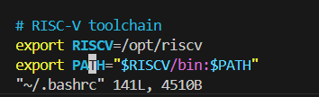
执行 source ~/.bashrc 或者重新打开终端，然后验证：
解压后的目录结构
xpack 的压缩包解压出来是 xpack-riscv-none-elf-gcc-13.2.0-2/，里面才是 bin/。
RISCV 要指向含有 bin/ 的那一层。
9.6 用 GDB 连接 OpenOCD
另开一个 WSL 终端：
进入 (gdb) 提示符后：
连接成功后 GDB 会显示 CPU 当前停在哪个地址。
10. 上板体验
到这里，你已经能通过 GDB 控制板子上的 CPU 了。本节不设验收，下面几件事建议都试一试。
10.1 常用 GDB 命令
| 命令 | 作用 |
|---|---|
info registers |
列出所有通用寄存器和 PC |
p $t0 / p/x $t0 |
查看某个寄存器（/x 以十六进制显示） |
x/10xw 0x80000000 |
以字（4 字节）为单位，十六进制显示从该地址开始的 10 个字 |
x/10xb、x/10xh |
同上，以字节 / 半字为单位 |
x/5i $pc |
把内存内容当成指令反汇编，显示 PC 处开始的 5 条 |
set {int}0x80001000 = 0x1234 |
向该地址写入 4 字节 |
set $t0 = 5、set $pc = 0x80000000 |
写寄存器 / 改 PC |
break *0x80000024 |
在该地址设断点 |
info break、disable 1 |
查看断点 / 禁用 1 号断点 |
stepi |
单步执行一条指令 |
c |
继续运行，直到断点或手动按 Ctrl+C 停下 |
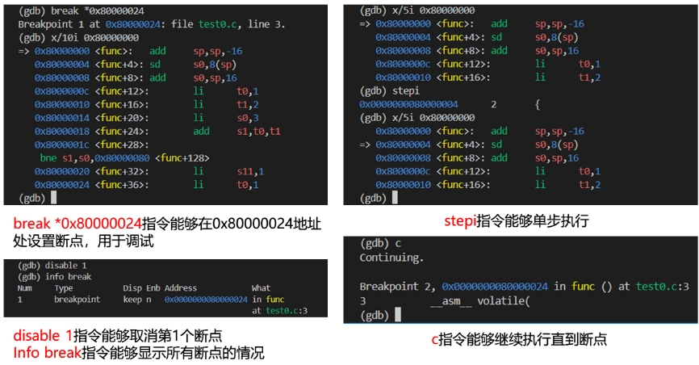
10.2 确认测试程序在板子上跑完了
比特流里的主存初始内容就是 lab3_test1.hex（§7.4），所以烧写、复位释放之后 CPU 已经把
Lab 3 的 test1 跑完了。程序把结果写在主存顶端的 magic 区域（Lab 3 §3.7），用 GDB 读出来：
第一个字应当是 0xc0dec0de（PASS）。在 ModelSim 里是 testbench 替你看这个地址，
在板子上就是你通过 JTAG 亲自去看。
再看看 CPU 现在停在哪里：
test1 的 main 返回后会进入 startup.S 里的 loop: j loop 死循环，
PC 应停在 0x8000002e（在 Lab 3 的 soc/sim/sw/lab3_test1.dump 里搜 <loop> 可以对上）。
10.3 在板子上直接访问你的 NPU
GDB 读写内存走的也是总线，所以它可以像 CPU 一样访问 0x7000_0000 开始的 MMIO 地址。
这相当于把 Lab 3 Task 5 的手写汇编，换成在 GDB 里一条一条手动执行。
test1 跑完后 ACT / WGT 里还留着它的数据。为了让结果好算，先把 A 的第 0 行、B 的第 0 列清零
（列优先打包：A[0][k] 在 ACT[k*4]，B[k][0] 在 WGT[k]），再写入 A[0][0] = 3、B[0][0] = 5：
set {int}0x70000050 = 0
set {int}0x70000060 = 0
set {int}0x70000070 = 0
set {int}0x70001004 = 0
set {int}0x70001008 = 0
set {int}0x7000100c = 0
set {int}0x70000040 = 3
set {int}0x70001000 = 5
x/1xw 0x70000040
set {int}0x70000000 = 1
x/1xw 0x70000004
x/1dw 0x70002000
| 命令 | 含义 | 预期 |
|---|---|---|
| 前 6 条 | A[0][1..3] = 0、B[1..3][0] = 0 |
|
set {int}0x70000040 = 3 |
ACT[0] = A[0][0] = 3 |
|
set {int}0x70001000 = 5 |
WGT[0] = B[0][0] = 5 |
|
x/1xw 0x70000040 |
读回 ACT[0] |
0x00000003 |
set {int}0x70000000 = 1 |
写 CONTROL，启动计算 |
|
x/1xw 0x70000004 |
读 STATUS |
0x00000001（DONE） |
x/1dw 0x70002000 |
读 OUT[0] = C[0][0] |
15 |
GDB 命令行里不能写注释
GDB 会把 # 当成表达式的一部分并报 Invalid character '#'，所以上面的命令没有行尾注释。
可以继续试试：
- 读
0x70002000~0x7000203C把 16 个结果全部读出来，和你手算的对一对 - 读一个没有映射的地址，例如
x/1xw 0x60000000，看看是不是 Lab 3 里见过的那个值 - 在
main里写 NPU 的那条sw指令处打断点（地址从.dump里找）， 再用set $pc = 0x80000000让程序从头开始、c继续运行，停下后用p $a2、p/x $a5看它要往哪个地址写什么。（不要用板上的复位键：它同时会复位 Debug Module 和 JTAG 接口，OpenOCD 的连接会出错，需要重启 OpenOCD）
写入 ROM 区域
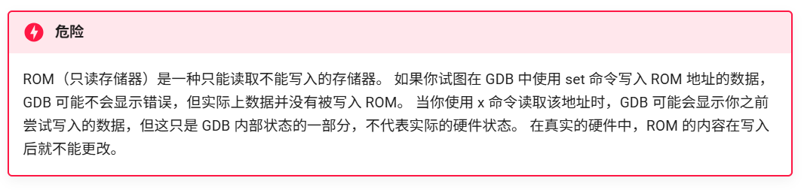
本 SoC 里 0x0001_0000 开始的是 bootram，看名字像 ROM，但它其实可以写（打开
soc/rtl/mem/bootram.sv 看看 wen_i 那一段）。真正的芯片里这类启动存储往往是只读的。
这段内容是复位后执行的第一段代码，不要随手改。好在本 SoC 的 bootram 每次复位都会重新装入
引导指令（Lab 2 Task 2），改坏了按一下复位键就能恢复。
11. 常见问题
Q1 烧写后 LED 完全没反应
先确认 locked 灯（§5.3）。不亮：Clocking Wizard 没锁定，查 fpga_clk_i 是不是约束到 P17。
亮但心跳灯不闪：一直在复位，查复位按键的管脚和电平（§7.1）。
Q2 OpenOCD 报 unable to open ftdi device
WSL 里看不到下载器。用 lsusb 确认有没有 0403:6014；没有就回 §9.3 重新 usbipd attach
（每次重新插拔下载器都要重做）。也可能是没有加 sudo。
Q3 OpenOCD 报 JTAG scan chain interrogation failed: all ones / all zeroes 或 Unsupported DTM version
下载器找到了，但 JTAG 链不通。按顺序查：
- 板子上电了吗？比特流烧进去了吗？（重新上电后比特流会丢失，要重新烧）
- 6 根线是否都接好，尤其是 GND 和 VREF
- TDI / TDO 是否接反（§8.2 末尾）
- 管脚约束是否和实际接的 J5 脚号一致
- 试着把配置文件里的
adapter speed再调低
Q4 读 0x80001FE0 得到的不是 0xc0dec0de
- 全是 0：主存可能是空的，查综合日志里的
readmem（§7.4） 0x12345678：程序开始了但没跑完。先确认这个 SoC 在 ModelSim 里是 PASS 的； 再确认 WNS ≥ 0（§7.4）- 其他值：用
x/5i $pc看 CPU 停在哪里
Q5 Vivado 综合报 could not open $readmem data file
见 §2.3，INIT_FILE 要改成绝对路径，分隔符用 /。
Q6 时序不满足（WNS < 0）
确认 Clocking Wizard 的输出是 50 MHz、fpga_top 里 SoC 用的是 clk_sys 而不是 fpga_clk_i。
Q7 Vivado 或 ModelSim 报一些莫名其妙的文件错误
检查工程路径和源码路径里有没有中文或空格。